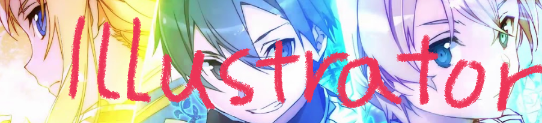
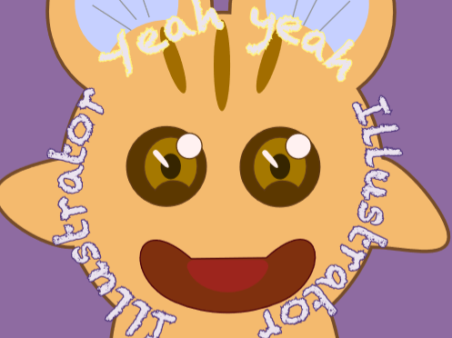

Home | Photoshop | Illustrator | Anime | Indesign | Contact |
I tried to create something cute and funny In this project but It was so hard for me to choose the color for this creature! I kinda make it in ramdom colors at the end. Illustrator was hard for me because I felt difficult to edit them.